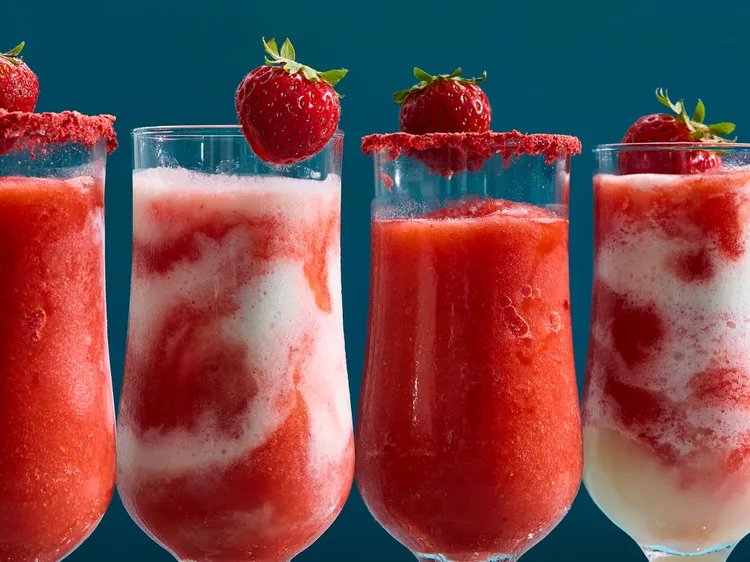

Strawberry Daiquiri

Description
Blend up this classic drink for a so-simple sweet-tart cocktail
Ingredients
- 1 lime wedge (optional)
- freeze-dried strawberry powder (optional)
- 1 (14 ounce) package frozen sliced strawberries
- 2 cups ice cubes
- 1/2 cup white rum
- 1/2 cup white sugar
- 1/2 cup fresh lime juice
- fresh strawberries, for garnish
Steps
- If you like, wipe rim of hurricane glasses with lime wedge.
- Dip rim into freeze-dried strawberry powder.
- Blend frozen sliced strawberries, ice cubes, white rum, sugar, and lime juice in a blender until smooth, adding more ice as needed.
- Pour mixture into prepared glasses.
- Garnish with fresh strawberries.
Home